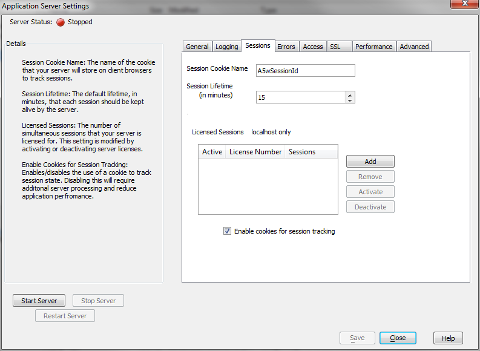

Running two server instances on the same hostname
If you run two instances of the Web Application Server on the same machine with the same hostname but different ports, you may encounter a problem of the sessions conflicting between the two instances. The way to fix this is to use different cookie names on the two instances.There is no problem if the two instances use different hostnames.
For example, suppose you have server instances at http://www.server1.com:80 and http://www.server1.com:81. Unless you change the configuration for one server, they will use the same session cookie names, and if you try to log into both servers at once from a single browser you will encounter weird behavior. For instance, when you log into the second server, the first server will consider you logged out.
To fix this, open the Sessions tab of the Application Server Settings for one instance, and change the Session Cookie Name from the default of A5wSessionId to something else.
